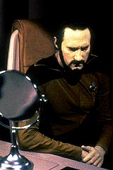
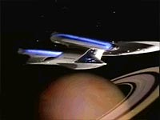
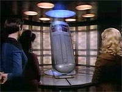
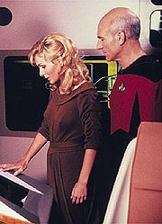
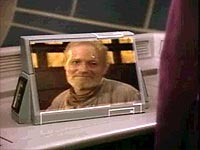
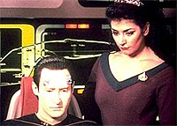

|
MANCHETE
DO EPISDIO
Data d
novo passo rumo conquista
de seus direitos, graas a seu "vov"
Episdio
anterior | Prximo
episdio
Sinopse:
Data Estelar: 42437.5.
A Enterprise corre para um planeta remoto em uma misso de
prioridade mxima para fornecer ajuda mdica ao dr. Ira Graves,
uma das maiores mentes humanas do sculo 24. A assistente do
cientista, Kareen Brianon, pediu ajuda contra os desejos do doente.
 Um
grupo avanado, liderado por Data, desce ao planeta para prestar
socorro a Graves. Data desenvolve um forte elo com o brilhante
cientista, que est bravamente resistindo aos estgios finais de
uma doena terminal. Logo aps Graves contar a Data sobre sua
capacidade incrvel de transferir conhecimento humano diretamente
para um computador, ele morre.
De volta Enterprise, Data mostra estranhos comportamentos,
chegando at a acusar Picard de estar tentando seduzir Kareen. Aps
um teste de engenharia no demonstrar qualquer problema com o andride,
Troi testa as reaes psicolgicas de Data e descobre duas
personalidades conflitantes dentro dele --a personalidade normal de
Data, junto com um lado brilhante mas irracional que est tomando
conta de sua mente.
 Enquanto
isso, Data revela a Kareen que ele na verdade Graves, que
transferiu sua mente moribunda para dentro do crebro positrnico
do andride. Ele tambm diz que pretende coloc-la em um corpo
andride para que eles possam viver eternamente juntos. Uma
assustada Kareen rejeita o plano de "Data Graves", o que
provoca uma reao violenta da parte dele.
Ao descobrir o plano de Graves, Picard confronta Data e pede que o
cientista abandono o corpo e a mente do andride. Em resposta, Data
ataca o capito, deixando-o inconsciente. Mas quando Picard acorda,
ele fica aliviado ao saber que o conhecimento de Graves foi
transferido para o computador da nave e que Data voltou a seu estado
normal.
Comentrios:
 "The
Schizoid Man" apresenta uma premissa muito semelhante do
episdio da Srie Clssica "What
Are Little Girls Made Of?", com a diferena maior
sendo a de que, enquanto no seriado original a posio era
totalmente desfavorvel aos andrides, aqui o cenrio no pode
ser descrito de forma to radical, pois h a necessidade de
proteger o personagem de Data. O segmento acaba resultando em mais
um passo de nosso andride preferido para que ele adquira seus
direitos enquanto forma de vida.
Na Srie Clssica, transferir uma mente humana para um
corpo andride era morte certa --a transferncia implicava uma
perda irreparvel no processo. Aparentemente, "The Schizoid
Man" diz a mesma coisa. Por outro lado, dizer que uma mente
no capaz de "viver" em um corpo andride equivale a
dizer que Data no vivo. Por isso, a melhor interpretao para
o episdio a de que a transferncia de Graves no deu certo
devido j debilitada condio mental do cientistas. Como ele j
estava irremediavelmente senil, no havia como preserv-lo de
forma intacta no corpo andride.
 Com
essa interpretao (que no tem nenhum favorecimento especfico
dado ao longo da histria, sendo, portanto, apenas especulativa),
salva-se Data e o enredo de uma tacada s.
Embora a histria em si no seja nada impressionante, as
interpretaes espetaculares de Brent Spiner (tanto como o
tradicional Data como o andride "possudo" por Ira
Graves) e de W. Morgan Sheppard (como o moribundo cientista no
planeta) tornam o episdio realmente agradvel de se ver. So
sensacionais as tiradas de Graves com Data, exigindo ser chamado de
"vov", e de Data j controlado por Graves, desafiando o
capito Picard.
 O
confronto final entre Picard e Data (possudo) ajudam Graves a
perceber que, apesar dos esforos, ele no foi integralmente
preservado no corpo andride. O capito da Enterprise baseia sua
argumentao no direito de Data vida, que estava sendo
eliminado pela presena do cientista em sua mente, enquanto Graves
defende que ele tem mais direitos que Data, um ser, segundo ele, sem
vida.
O nocaute do capito pelo andride a gota d'gua para que
Graves perceba que j no mais o mesmo, o que o faz restaurar a
conscincia de Data e inserir seu conhecimento no computador da
Enterprise. Na queda de brao pelo direito de viver, o andride
saiu ganhando. Mas como a motivao principal de Graves para sua
deciso foi seu prprio comportamento aberrante, no se pode
dizer que Data de fato adquiriu totalmente seus direitos enquanto
forma de vida artificial legtima. Isso s viria a acontecer em "The
Measure of a Man", dessa mesma temporada.
Uma coisa que incomoda um pouco no episdio (e em muitos outros
durante a srie) a extrema "humanizao" de Data.
Embora um teste na engenharia faa todo o sentido do mundo, um
teste psicolgico com base na exibio de imagens no tem a
menor razo de ser. Trata-se apenas de um mecanismo para que Troi
consiga aferir a existncia de uma dupla personalidade em Data,
diante da incapacidade da conselheira de sentir as emoes do andride.
Ou seja, uma soluo fcil e pouco convincente para um problema
de roteiro.
 Tirando
o prprio Data, o episdio no faz muito por qualquer outro
personagem, o que mostra a natureza profundamente voltada para
enredos (e pouco para personagens) da srie naquele ponto (isso
mudaria definitivamente a partir do terceiro ano, com a chegada de
Michael Piller na equipe de roteiristas).
Tecnicamente, o episdio bem-executado, com atuaes
convincentes de Suzie Plakson (Selar) e Barbara Alyn Woods (Kareen)
e uma direo sem destaques, mas sem problemas. Os efeitos, pouco
exigidos ao longo do segmento, cumprem o papel que exigido deles
sem grandes dificuldades.
Citaes:
Graves - "It's
no secret that I don't like people much, and I like doctors even
less."
("No segredo que eu no gosto muito de pessoas, e eu
gosto de mdicos menos ainda.")
Troi - "That's funny. I thought most doctors were people."
("Isso engraado. Eu pensava que a maioria dos mdicos
fossem pessoas.")
Graves - "Then you are wrong. Ask any patient."
("Ento voc est errada. Pergunte a qualquer
paciente.")
Troi - "I thought you didn't like people."
("Pensei que voc no gostasse de pessoas.")
Graves - "Women aren't people, they are women."
("Mulheres no so pessoas, so mulheres.")
Data - "I trust I did nothing unbecoming to a Starfleet
officer."
("Eu espero que no tenha feito na indigno de um oficial da
Frota.")
Riker - "Does wrestling with a Klingon targ ring a bell?"
("Brigar com um targ Klingon te diz alguma coisa?")
Data - "Did I win?"
("Eu ganhei?")
Trivia:
 Suzie Plakson aqui interpreta a dra. Selar, a primeira Vulcana
oficial da Frota que foi vista no franchise. Suzie ficaria mais
conhecida dos fs de Jornada como K'Ehleyr, a Klingon me de
Alexander, o filho de Worf. Como K'Ehleyr, Suzie participou de mais
dois episdios na Nova Gerao: "Emissary"
e "Reunion".
Suzie Plakson aqui interpreta a dra. Selar, a primeira Vulcana
oficial da Frota que foi vista no franchise. Suzie ficaria mais
conhecida dos fs de Jornada como K'Ehleyr, a Klingon me de
Alexander, o filho de Worf. Como K'Ehleyr, Suzie participou de mais
dois episdios na Nova Gerao: "Emissary"
e "Reunion".
W. Morgan Sheppard, o dr. Ira Graves deste episdio, atuou em "Jornada
nas Estrelas VI - A Terra Desconhecida" como um comandante
Klingon.
Ficha
tcnica:
Histria de Richard Manning
& Hans Beimler
Roteiro de Tracy Torm
Direo de Les Landau
Exibido em 23/01/1989
Produo: 031
Elenco:
Patrick Stewart como
Jean-Luc Picard
Jonathan Frakes como William Thomas Riker
Brent Spiner como Data
LeVar Burton como Geordi La Forge
Michael Dorn como Worf
Marina Sirtis como Deanna Troi
Wil Wheaton como Wesley Crusher
Elenco convidado:
Diana Muldaur como
Katherine "Kate" Pulaski
W. Morgan Sheppard como dr. Ira Graves
Suzie Plakson como tenente Selar
Barbara Alyn Woods como Kareen Brianon
Episdio
anterior | Prximo
episdio
|